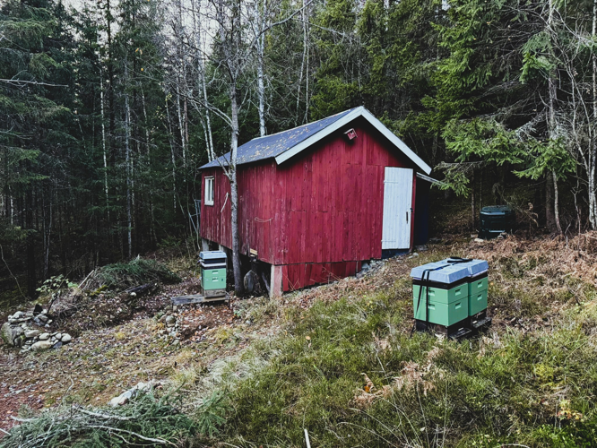

Seigr Insect Reserve is a small living ecosystem in the forest, created and maintained as a refuge for insects and other small forms of life.
The project began with beekeeping, but the hives are only one part of it. The area is developed to provide food, shelter and places to live for bees, wild pollinators, and countless other insects. Stones, wood, plants and other natural materials are arranged to create habitats where life can establish itself, rather than simply passing through.
The purpose is not to create a sealed-off nature reserve. The area remains part of the forest and is open to people who want to experience nature peacefully and respectfully. The idea is instead to give a small piece of the forest a little more room for life.
This is also where Seigr becomes something more than technology. The same principles of building, experimentation and care that shape Seigr's technological work are applied here to something living. Instead of extracting value from a system, the goal is to build something that gives something back.
The Seigr Insect Reserve is a continuing project. Habitats are built, plants are established, bees are kept, observations are made, and the area changes with the seasons. Some things succeed, others do not. The work continues regardless.
The bees are not the whole story.
They are part of it.
